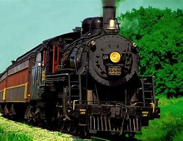

history of the steam train
The early steam locomotives were invented and developed by some of the greatest engineers in history. The first full scale working railway steam locomotive was invented by Richard Trevithick in 1804. He successfully demonstrated his invention on February 21, 1804, carrying seventy passengers, five wagons and ten tons of iron. Some of the oldest steam trains in the world were build for Christopher Blackett, the owner of the Northumberland colliery at Wylam. Some of his most famous engineers were called William Hedley, Jonathan Forest and Timothy Hackworth. They built the Puffing Billy which is now the oldest surviving steam locomotive in the world. George Stephenson and his son, Robert Stephenson, became major engineers and inventors of steam locomotives building famous locos such as the Blücher (1814), Stephenson’s Rocket (1829) and the Planet (1830)..

largest steam train now back on the tracks
With plumes of smoke billowing into the sky, the world’s largest steam locomotive left Wisconsin on Friday morning, bound for an afternoon stop in West Chicago.Back on the rails for the first time in six decades, the only operational Big Boy steam engine in the world is on a journey across the Midwest to mark the 150th anniversary of the completion of the Transcontinental Railroad in 1869. Just 25 of the Big Boy engines were built, in the early 1940s, primarily for hauling freight through the Wasatch Mountains in northeast Utah, according to Trains magazine. After logging more than 1 million miles on Western railroads, engine No. 4014 was retired in 1961 and given to a chapter of the Railway and Locomotive Historical Society in Southern California.
- steam trains galore
- old steam trains video
- where steam trains the best train?
- who invented the steam train?